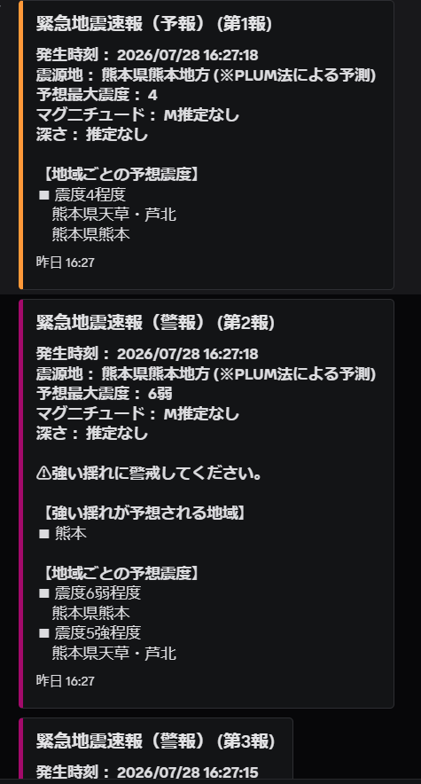
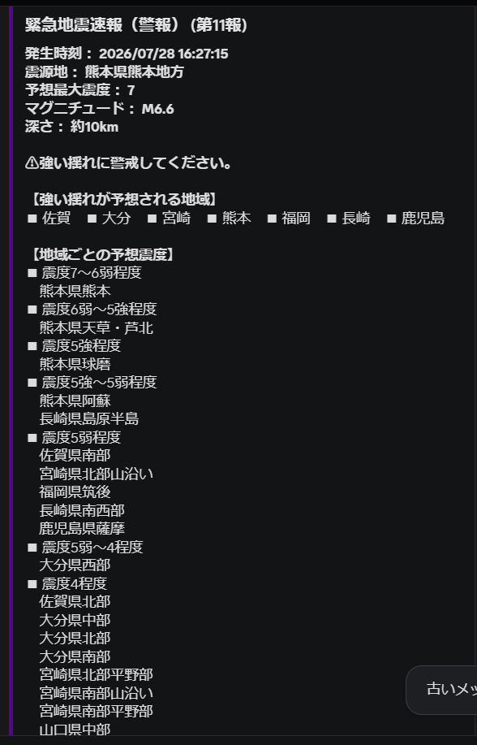
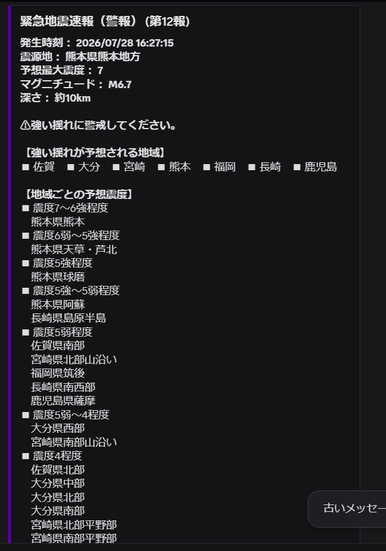
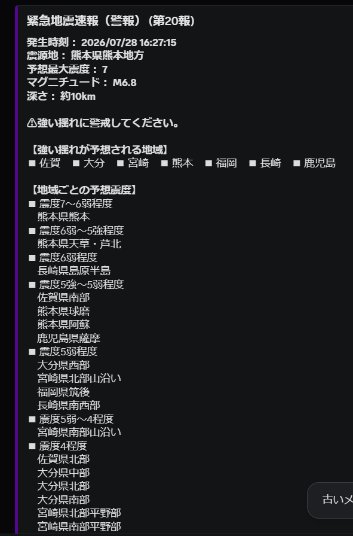
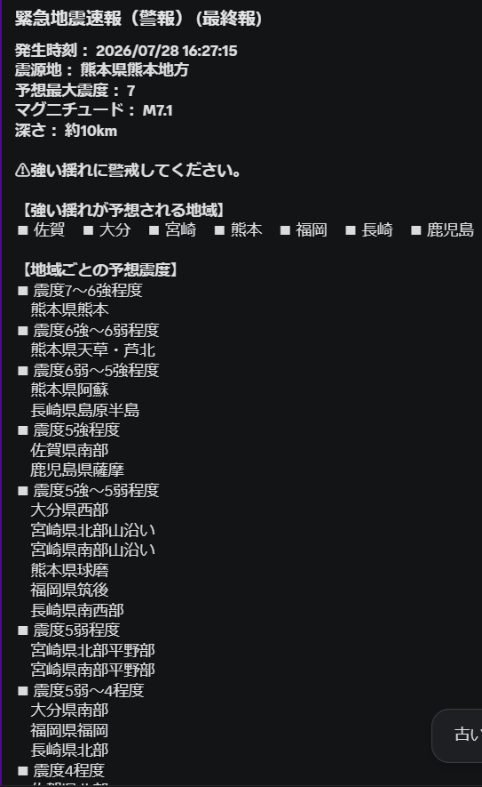
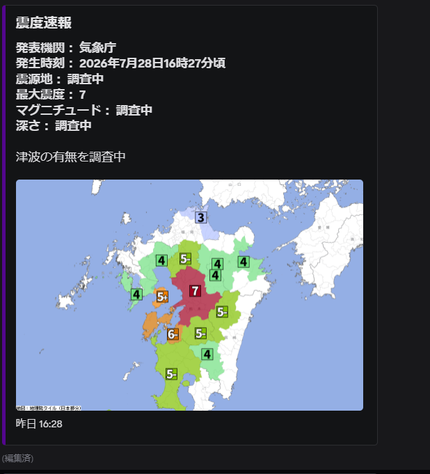
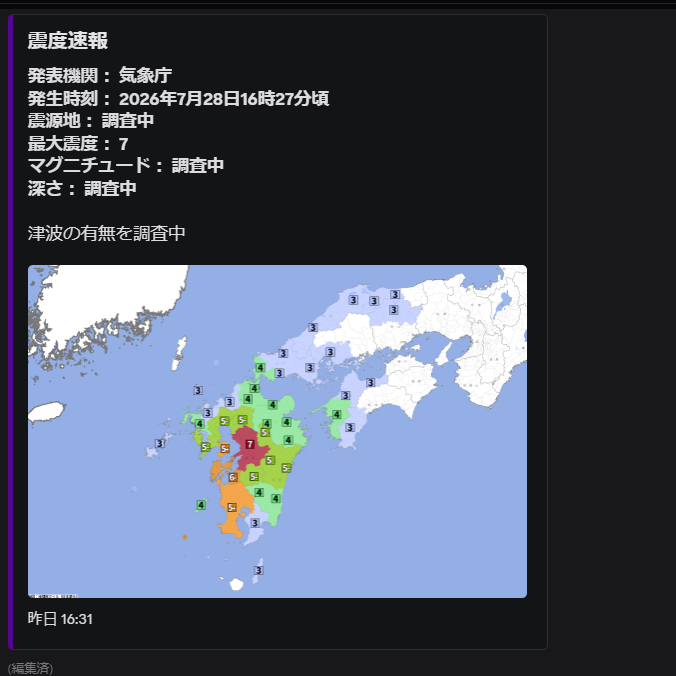
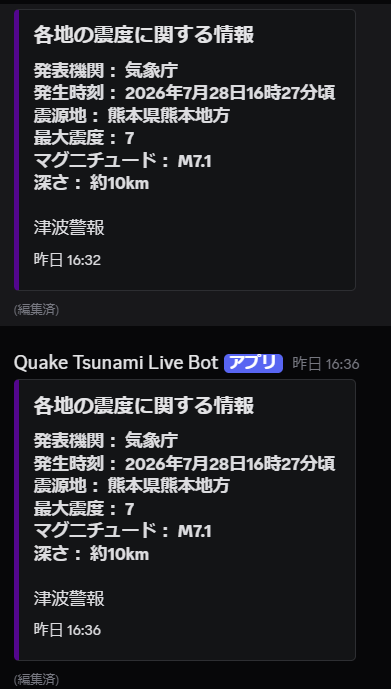
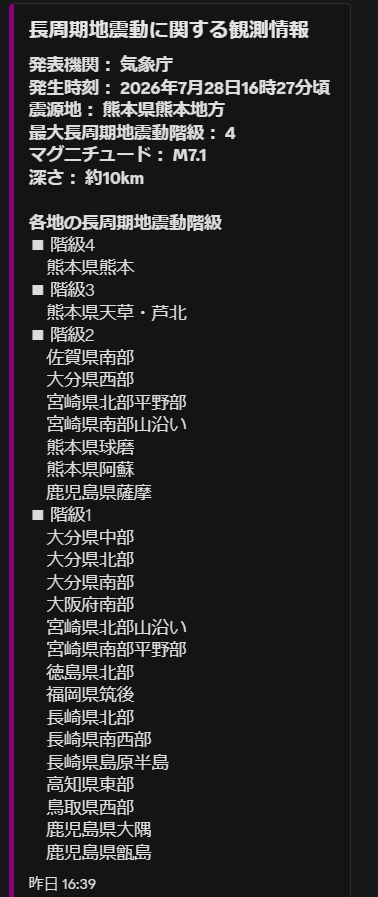
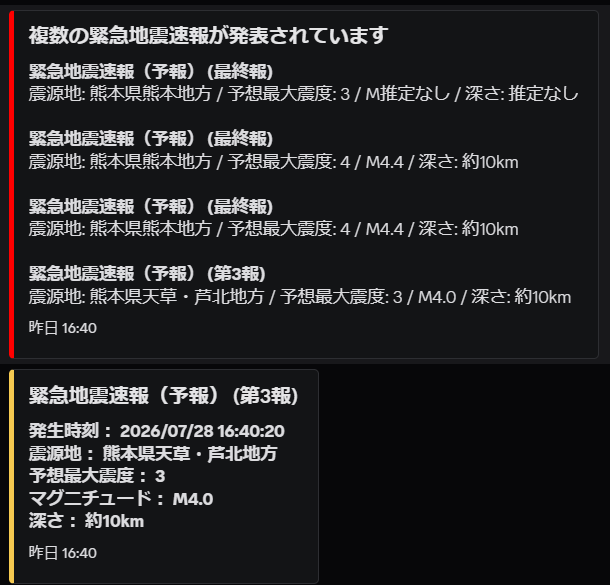

令和8年熊本地震 — Botの記録と、震災時に大切なこと
はじめに
2026年7月28日16時27分頃、熊本県熊本地方を震源とするマグニチュード7.1の地震が発生しました。 この地震により熊本県内で最大震度7を観測し、甚大な被害が報告されています。 被災された方々に、心よりお見舞い申し上げます。
この記事では、私が開発・運用しているDiscord Bot「QTL_Bot」が 今回の地震でどのように動作したかの記録と、 震災時に大切なことをまとめています。
QTL_Botの通知記録
今回の地震において、QTL_Botは発生直後から各種情報をリアルタイムで通知しました。 以下は実際の通知のスクリーンショットです。
16:27 — 緊急地震速報（警報）
地震発生と同時に緊急地震速報（警報）を通知。 震源地・予想最大震度・対象地域を即座に配信しました。





16:31 — 震度速報・震度分布図
震度速報を通知。 震度分布図の画像も合わせて配信しました。


16:39 — 各地の震度・長周期地震動・余震EEW
各地の震度に関する情報・長周期地震動に関する観測情報・
余震の緊急地震速報を連続して通知しました。ただ、embedが遅いせいかはわかりませんが各地の震度に関する情報の画像が表示されていません...。



震災時に大切なこと
- 緊急地震速報が鳴ったらすぐ身を守る（机の下・頭を守る）
- 揺れが収まるまで外に出ない
- 津波の可能性がある場合はすぐ高台へ
- 正確な情報源を確認する（気象庁・NHK等）
- 家族との安否確認手段を事前に決めておく
おわりに
今回の地震で、QTL_Botが少しでも情報収集の役に立てていたなら幸いです。 引き続き余震が続いていますので、被災地域の方はくれぐれもお気をつけください。
QTL_BotはGitHubで公開しています。 @akethimitsuhide/QTL_Bot